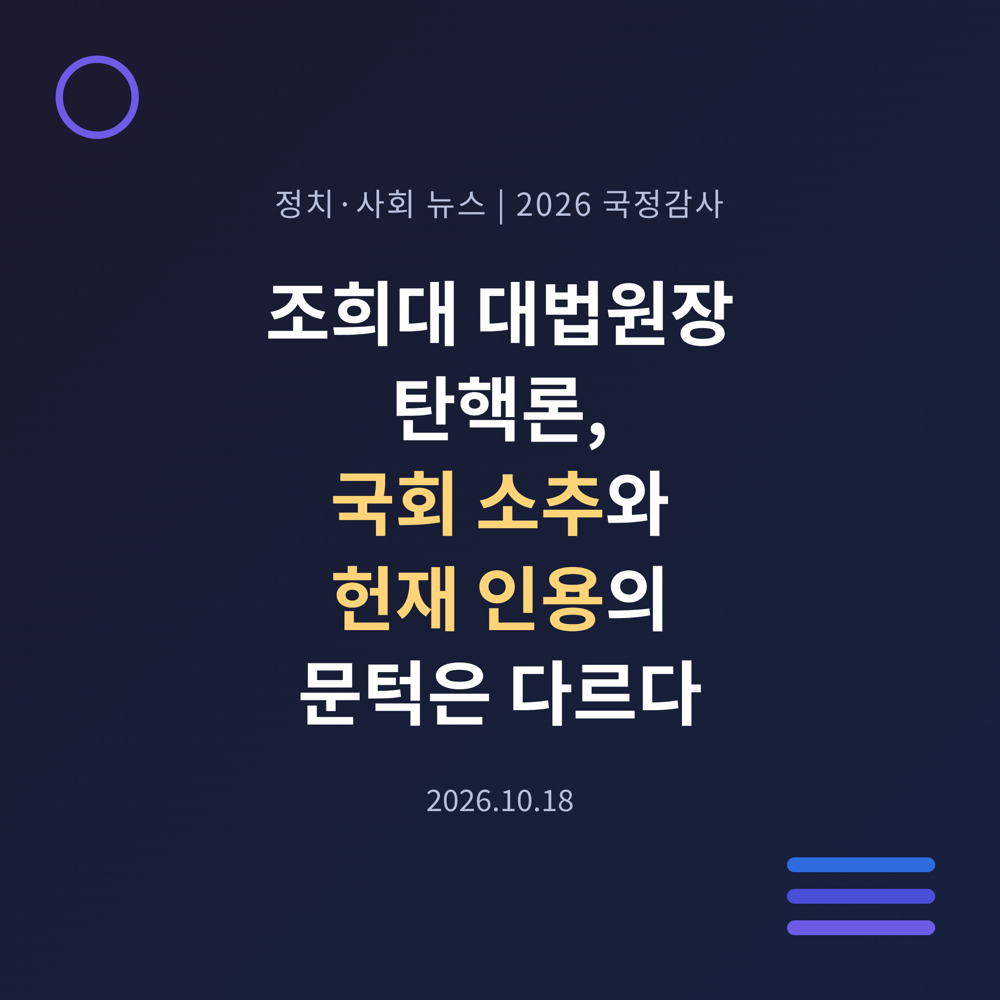
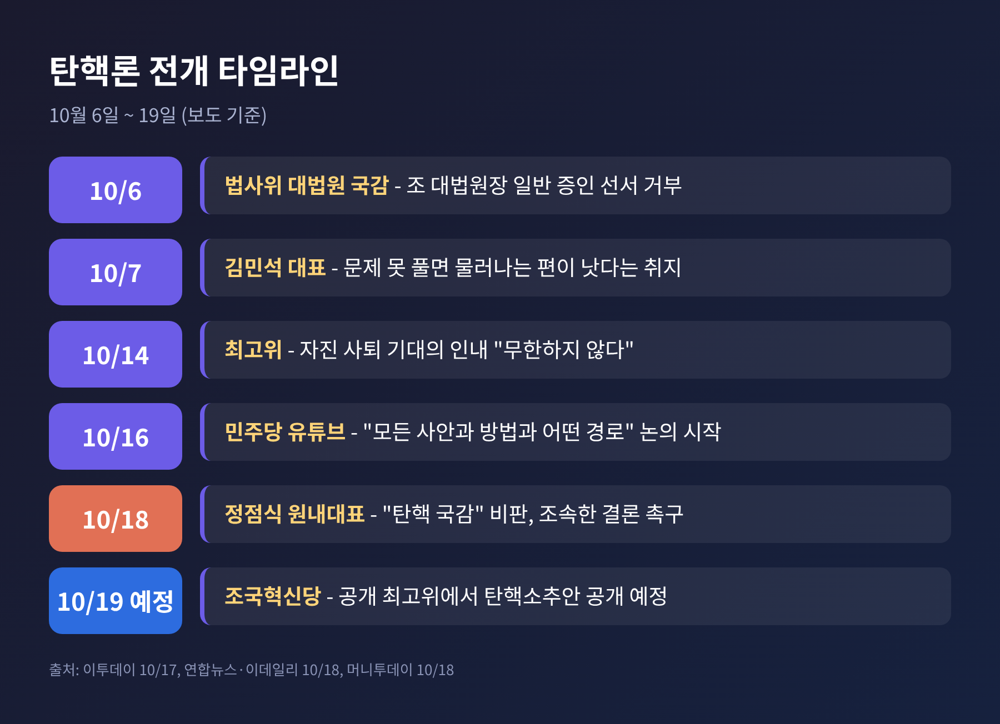
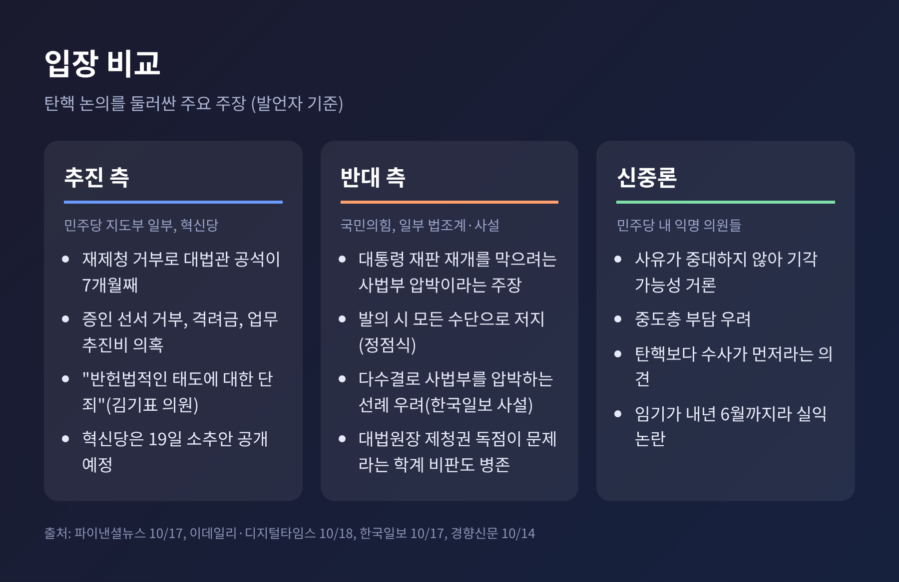
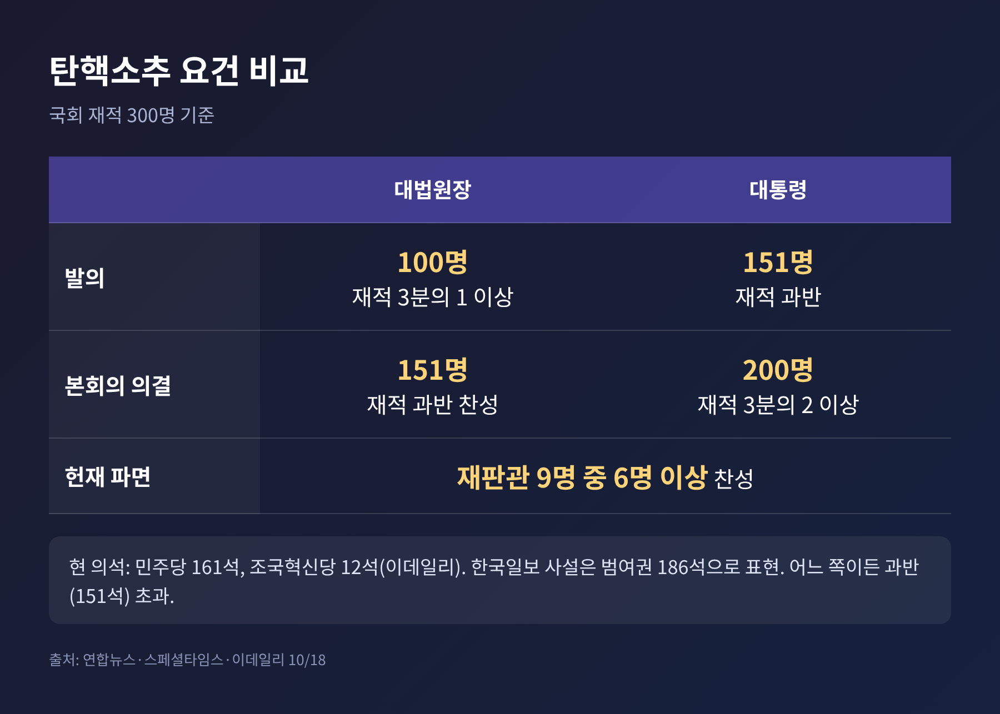
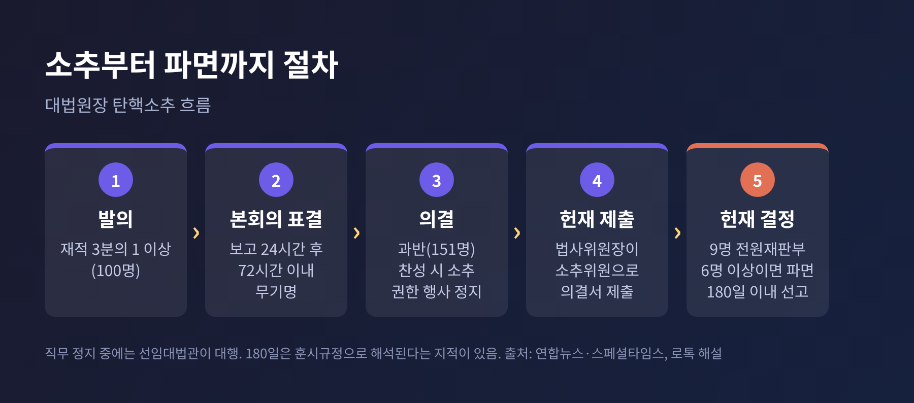
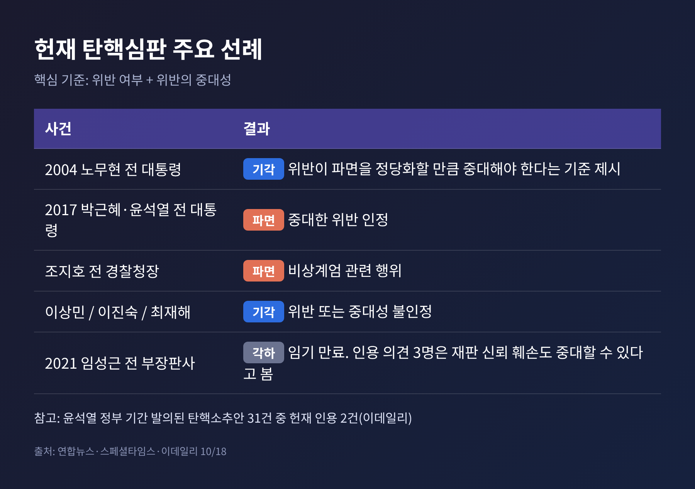
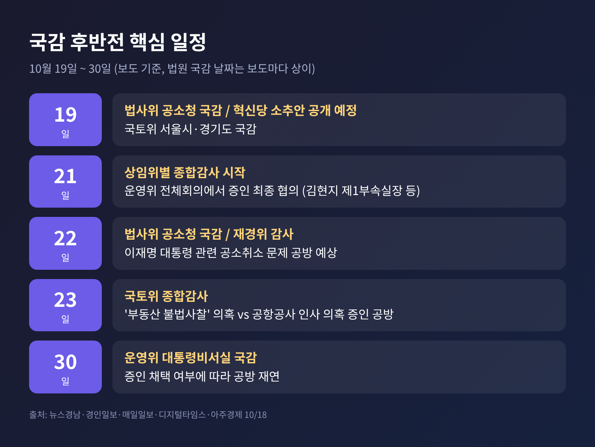

오늘은 2026년 국정감사 후반전을 앞두고 불붙은 '조희대 대법원장 탄핵론'을 정리해 보려 합니다. 핵심은 하나입니다. 국회에서 소추안을 의결하는 일과 헌법재판소에서 파면 결정을 받는 일은 요건이 크게 다르다는 점입니다. 여야 주장과 절차, 앞으로의 일정을 차례로 살펴보겠습니다.
3줄 요약 1. 김민석 민주당 대표가 10월 16일 "모든 사안과 방법과 어떤 경로"를 논의하기 시작했다고 밝혀, 탄핵 논의가 사실상 공식화됐다는 해석이 나왔습니다. 2. 대법원장 탄핵소추는 재적 3분의 1 발의, 과반 찬성이면 가능하지만, 헌재에서 파면하려면 재판관 9명 중 6명 이상의 찬성이 필요합니다. 3. 국민의힘은 "사법부 압박"이라며 반대하고, 민주당 안에서도 신중론이 나옵니다. 혁신당은 19일 소추안을 공개할 예정입니다.
시작은 대법관 공석 문제였습니다. 노태악 전 대법관이 3월 퇴임한 뒤 자리가 7개월째 비어 있습니다(경향신문 10월 14일 보도). 조희대 대법원장은 8월 18일 후임 후보 2명을 서면으로 제청했고, 이후 대통령실의 재제청 요구를 받아들이지 않았다고 보도됩니다. 청와대와 대법원이 헌법 제104조 제2항을 서로 다르게 읽고 있는 상황입니다.
이후 흐름은 단계적으로 강해졌습니다.
한 가지 짚어둘 대목이 있습니다. 김 대표가 16일 방송에서 '탄핵'이라는 단어를 직접 썼는지는 보도마다 표현이 다릅니다. 이투데이는 언급하지 않았다고 전했고, 연합뉴스와 파이낸셜뉴스는 이를 논의 공식화로 해석했습니다. 이 글에서는 "탄핵을 포함한 모든 방법을 논의하기 시작했다"는 수준으로만 적습니다.

대법원장은 사법부의 수장이면서 대법관 제청권과 법원 인사권을 쥔 자리입니다. 그래서 소추 논의 자체가 입법부와 사법부의 관계를 건드립니다. 이번 논의에는 세 가지 층위가 겹쳐 있습니다.
첫째는 헌법 해석 문제입니다. 대법관은 대법원장의 제청으로 국회 동의를 얻어 대통령이 임명합니다. 여권 강경파는 임명권이 제청권보다 우선한다고 봅니다. 조 대법원장은 대통령이 제청 과정에 관여할 수 없다는 입장입니다(이데일리 보도). 차진아 고려대 교수는 두 권한이 대등하다고 설명했습니다.
둘째는 인사 일정입니다. 장동혁 국민의힘 대표는 내년 2월 법원 정기인사 전에 직무를 정지시켜 인사권을 막으려는 시도라고 주장합니다. 민주당은 소추 여부 자체를 아직 확정하지 않았습니다.
셋째는 국감 정국입니다. 법사위에서는 대법관 공석과 업무추진비, 격려금을 두고 공방이 이어지고, 운영위에서는 증인 채택 협상이 시작됩니다. 탄핵 논의가 상임위 협상 전반에 영향을 주는 구조입니다.
탄핵 논의를 이끄는 쪽이 거론하는 사유는 크게 다섯 가지로 보도됩니다.
김기표 민주당 법사위 의원은 탄핵을 "반헌법적인 태도에 대한 단죄"라고 표현했습니다. 학계에서도 이 사안을 비판하는 목소리가 있습니다. 한상희 건국대 명예교수는 재제청 거부 선언을 "헌법적 근거가 없는 부적격의 대응"이라고 평가했습니다. 송기춘 전북대 교수는 대통령이 재제청을 요구할 때 명확한 사유를 밝혀야 한다고 보았습니다. 같은 토론회에서도 청와대가 사유를 밝히지 않은 상황에서 즉시 응해야 하는지에는 견해가 갈렸습니다.
조국혁신당은 더 직접적입니다. 조국 혁신정책연구원장은 "언제까지 조 대법원장에 끌려다닐 것인가"라고 적고, 민주당에 구체적 일정을 내놓으라고 촉구했습니다. 혁신당은 작년 10월 공개한 소추안에 격려금과 업무추진비 항목을 더한 새 안을 19일 공개할 예정입니다.
국민의힘은 이 논의를 이재명 대통령 재판 재개를 막기 위한 사법부 압박으로 규정합니다. 정점식 원내대표는 김 대표의 발언만으로도 사실상 발의에 가깝다고 보았습니다. 소추안이 실제 발의되면 모든 수단으로 저지하겠다고 밝혔고, 이재명 대통령 탄핵 카드로 맞불을 놓겠다는 방침이 보도됐습니다. 이 맞불의 구체적 절차는 확인되지 않았습니다.
신중론은 여당 안에서도 나옵니다. 파이낸셜뉴스가 전한 지도부 소속 의원들의 익명 발언은 이렇습니다. 사유가 충분히 중대하지 않아 헌재에서 기각될 가능성이 크고, 지지층 결집에는 도움이 되어도 중도층에는 부담이 될 수 있다는 것입니다. 이데일리가 전한 초선 의원은 탄핵보다 증언감정법 위반과 업무추진비 의혹에 대한 수사가 먼저라고 말했습니다.
언론 사설도 갈립니다. 한국일보는 17일 사설에서 입법부가 다수결로 사법부를 굴복시키려는 발상이라며, 근거가 약한 소추가 나쁜 선례가 될 수 있다고 우려했습니다. 반면 경향신문이 전한 토론회에서는 대법원장 1인의 제청권 독점 구조 자체가 문제라는 지적이 나왔습니다.

연합뉴스와 스페셜타임스가 정리한 절차를 풀어 보겠습니다.
대법원장은 대통령과 달리 재적의원 3분의 1 이상(300명 기준 100명)이 발의하고, 과반(151명)이 찬성하면 소추됩니다. 대통령은 재적 과반 발의에 3분의 2(200명) 찬성이 필요합니다. 이데일리는 민주당 161석, 조국혁신당 12석이라고 전했고, 한국일보 사설은 범여권을 186석으로 표현했습니다. 어느 수치를 보아도 과반선은 넘습니다. 혁신당은 12석이라 단독 발의가 어렵고, 민주당이 참여해야 합니다.

소추안이 본회의를 통과하면 곧바로 두 가지가 일어납니다. 먼저 소추된 대법원장의 권한 행사가 헌재 심판이 끝날 때까지 정지됩니다. 직무는 선임대법관이 대행합니다. 다만 권한대행이 대법관 후보를 제청할 수 있는지는 법에 명확한 규정이 없다는 지적이 있습니다. 다음으로 법사위원장이 소추위원이 되어 헌재에 의결서를 냅니다.
헌재는 재판관 9명 전원재판부로 심리하며, 접수일부터 180일 이내 선고하도록 규정돼 있습니다. 다만 이 기간이 훈시규정으로 해석돼 길어질 수 있다는 지적도 있습니다. 파면에는 재판관 6명 이상의 찬성이 필요합니다. 그렇지 않으면 기각됩니다.

헌재가 따지는 핵심은 두 가지입니다. 헌법이나 법률을 위반했는지, 그 위반이 파면을 정당화할 만큼 중대한지입니다. 2004년 노무현 전 대통령 사건에서 처음 이 기준이 제시됐습니다. 위반이 인정되더라도 중대하지 않으면 기각된다는 것입니다.
이후 사례는 엇갈립니다. 박근혜 전 대통령과 윤석열 전 대통령, 조지호 전 경찰청장은 파면됐습니다. 이상민 전 행정안전부 장관, 이진숙 전 방송통신위원장, 최재해 전 감사원장은 기각됐습니다. 2021년 임성근 전 부장판사 사건은 임기가 끝나 각하됐는데, 당시 인용 의견을 낸 재판관 3명은 재판의 독립과 공정에 대한 신뢰를 현저히 해치면 중대한 위반이 될 수 있다고 보았습니다. 이데일리는 윤석열 정부 기간 발의된 탄핵소추안 31건 중 인용이 2건이었다고 전했습니다.
이번 사안에 대한 전문가 평가는 갈립니다.
한 가지 변수는 시간입니다. 조 대법원장의 정년은 70세로, 1957년 6월 6일생이라 2027년 6월 5일까지 직을 수행할 수 있습니다. 헌재 심리가 길어지면 결정 전에 임기가 끝날 수 있다는 점은 임성근 사건에서 이미 한 번 나타난 일입니다.

예전에는 국감이 개별 상임위의 정책 점검 무대였다면, 올해 후반전은 탄핵론과 증인 협상이 한데 묶여 있습니다. 주요 일정은 다음과 같습니다.
증인 문제에서도 양측이 맞섭니다. 국민의힘은 인사 논란을 이유로 김현지 청와대 제1부속실장의 출석을 요구하고, 김용범 전 정책실장을 정무위에 부르려 합니다. 민주당은 인사가 적법한 절차였다며 정쟁이라고 반대합니다. 국토위에서는 국민의힘이 김현미 전 장관의 증인 채택을, 민주당이 김건희 여사 관련 인사 의혹 증인을 각각 요구합니다.

정리하면 이렇습니다. 소추 자체는 숫자상 여당 단독으로 가능합니다. 그러나 가능한 일과 실제로 하는 일은 다릅니다. 현재 보도로 확인되는 변수는 세 가지입니다.
첫째, 민주당의 결정입니다. 김 대표는 구체적 로드맵을 내지 않았고 당내 의견을 수렴하는 중이라고 보도됩니다. 디지털타임스는 이 대통령의 결단이 최종 변수라는 정치평론가 분석을 전했습니다. 이는 해석이며 확인된 계획은 아닙니다.
둘째, 헌재의 6인 문턱입니다. 전문가 다수가 인용 가능성을 낮게 보지만, 소수는 재제청 거부 선언이 중대한 위반일 수 있다고 봅니다. 결과를 단정하기는 어렵습니다.
셋째, 시간표입니다. 내년 2월 법원 정기인사, 2027년 6월 정년, 헌재 180일이라는 세 가지 시계가 서로 다른 속도로 돌아갑니다.
대법관 공석이라는 출발점은 탄핵과 무관하게 남습니다. 헌재 권한쟁의심판이나 대통령실의 거부 사유 명시, 대법원장의 즉각 재추천 같은 해법도 토론회에서 거론됐습니다. 탄핵이라는 가장 무거운 카드 앞에서 이런 대안이 얼마나 논의될지가 후반전의 관전 포인트입니다.
끝으로 한 마디만 더 드리겠습니다. 이번 논란은 누가 옳으냐보다 어떤 절차로 판단하느냐의 문제에 가깝습니다. 헌법은 소추의 문턱을 낮게 두고, 파면의 문턱을 높게 두었습니다. 그 설계가 이번에 어떻게 작동할지는 앞으로 며칠, 그리고 몇 달의 선택에 달려 있습니다.
※ 이 글은 2026년 10월 18일까지 보도된 내용을 정리한 것입니다. 이후 일정과 입장은 달라질 수 있습니다.